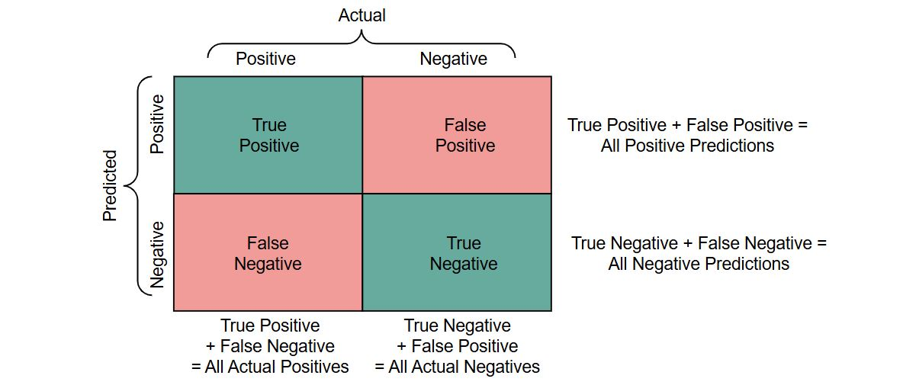
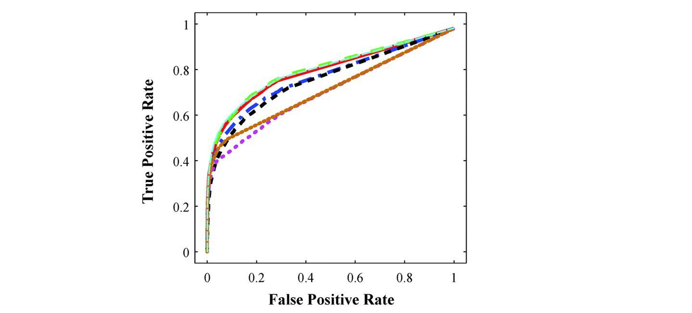
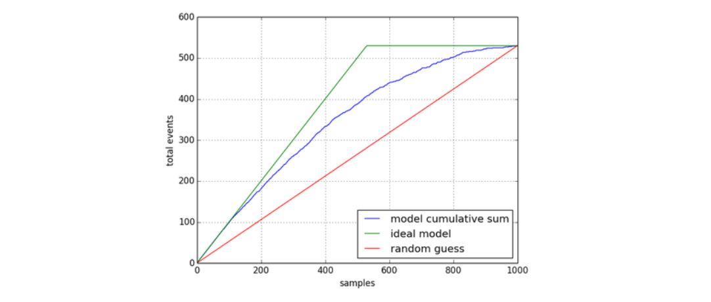
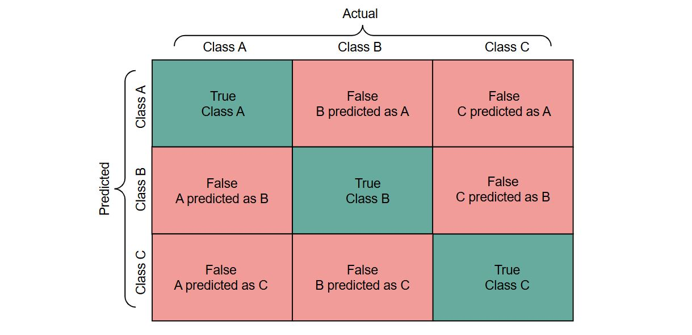
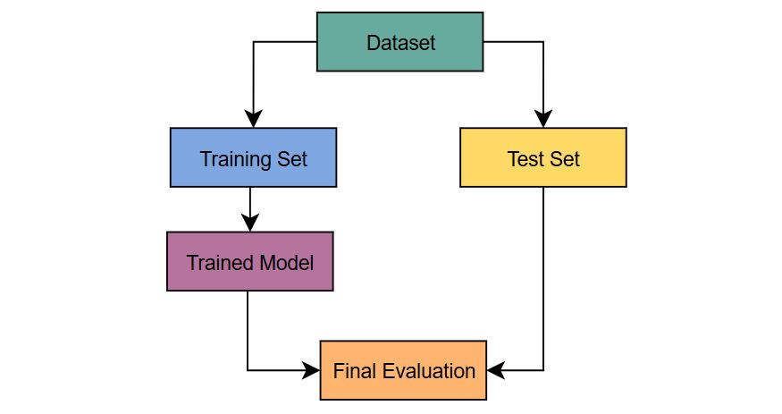
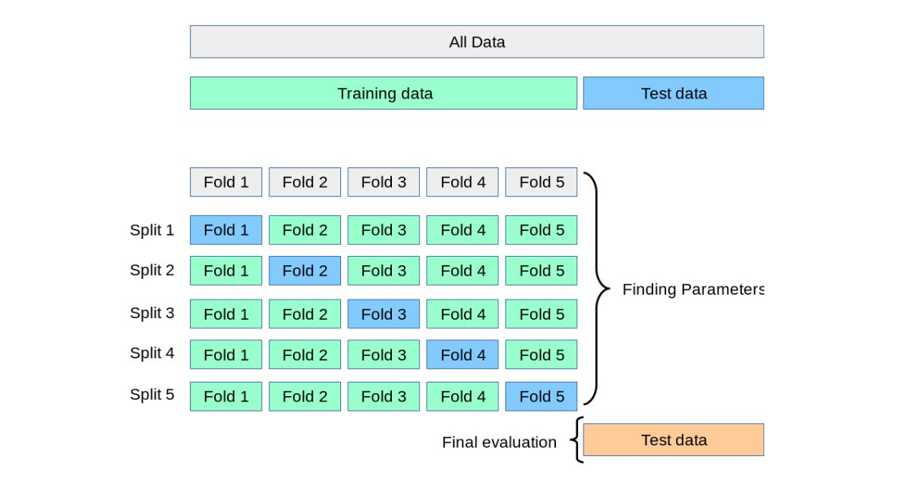
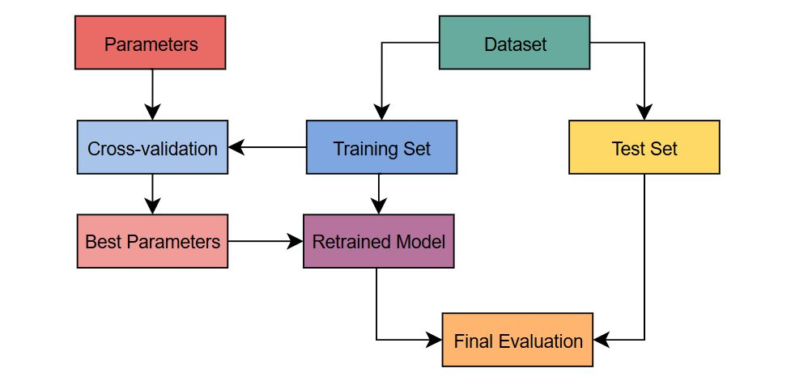
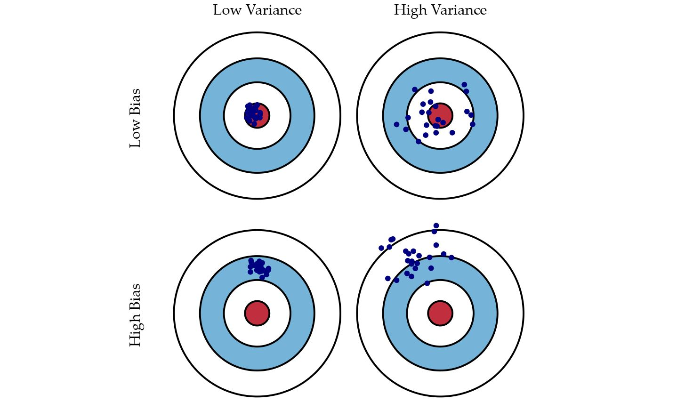

Chapter 5: What makes good models good and bad models bad?#
We haven’t discussed much about evaluating a model’s performance yet. Based on your own intuition, what would you say makes a model good? For most people, the first answer would be if it makes correct predictions. That is what accuracy measures: the number of correct predictions out of all the predictions made.
Introduction: Beyond Accuracy#
In our quest to build truly intelligent systems, it’s tempting to focus solely on accuracy. After all, what good is a model if it can’t predict outcomes correctly? But the reality is that accuracy is only one piece of the puzzle when it comes to evaluating the quality of a machine learning model. A model that boasts impressive accuracy on a test set might still be riddled with hidden flaws, harboring biases, lacking interpretability, or failing to generalize to new, unseen data.
Just like a skilled travel agent considers more than just the price when planning a trip, we must look beyond the accuracy score when evaluating our models. We need to consider factors like:
Interpretability: Can we understand how the model is making its decisions? This is crucial for building trust, debugging errors, and ensuring fairness.
Robustness: Does the model perform well on a variety of data, including noisy or incomplete data? A robust model is less likely to be thrown off by unexpected inputs.
Error Analysis: What types of errors does the model make, including false positives, false negatives, and their underlying causes. Sometimes one type of error is worse than another kind, so we try to minimize that kind of error even if the accuracy worsens.
Fairness: Does the model treat all individuals and groups fairly, or does it perpetuate existing biases? Ethical AI development demands that we address fairness concerns.
Efficiency: How much time and resources does the model require to train and make predictions? Efficiency is often a practical consideration, especially for large datasets or real-time applications.
This chapter covers this broad landscape of model evaluation, providing you with the tools and knowledge to assess the strengths and weaknesses of your supervised learning models. We’ll explore a range of evaluation metrics, from classic measures like accuracy and mean squared error to more nuanced techniques like precision and recall. We’ll also tackle the critical issues of overfitting, underfitting, and bias, equipping you with strategies like validation to mitigate these challenges and build models that are both accurate and reliable.
But our journey goes beyond the technical aspects of evaluation. We’ll also delve into the ethical considerations that are intertwined with AI development, emphasizing the importance of fairness, inclusion, and diversity in building responsible AI systems. By the end of this chapter, you’ll have a comprehensive understanding of what makes a good model truly “good,” empowering you to create AI solutions that are not only effective but also ethical and trustworthy.
Performance Metrics#
We keep returning to the fundamental differences between categorical and numerical and related classification and regression models. Here too we will need completey different metrics for evaluating classification models and regression models.
Classification Metrics: Measuring Predictive Accuracy#
Let’s start with accuracy since we’ve already identified it as the intuitive performance measure.
Accuracy: The overall proportion of correct predictions. Calculated as:
Accuracy = Correct Predictions / Total Predictions
Correct is straightforward for classification models. Imagine I’m trying to predict if a customer will book a trip. If my model predicts yes and the customer books the trip, the prediction is correct. If my model predicts no and the customer books the trip, the prediction is incorrect. There are two more possibilities: model predicts yes and customer doesn’t book or model predicts no and the customer doesn’t book.
To keep track of these four possible outcomes (in a binary yes/no situation), there’s something called a confusion matrix.

Then we can easily calculate accuracy as:
Accuracy = True Positives + True Negatives / All Positive Predictions + All Negative Predictions
Now let’s get into the reasons where this isn’t the best measure of performance. Imagine for example you’re researching an uncommon disease. Only about 1 in 1000 people have this disease. A new company DiagnosAI develops a model that just automatically predicts no one has the disease would be 99.9% accurate. Would you consider that a good model? Would recommended this model to doctors to help them diagnose patients?
This is an example of class imbalance, where one class is much more prevalent than others. Class imbalance is a situation where accuracy won’t give a clear indication of a model’s performance.
Continuing with the healthcare theme, imagine another model that identifies a disease like HIV infection. Think of the confusion matrix above. We have four possibilities:
a patient predicted as HIV+ is actually HIV+
a patient predicted as HIV+ is actually HIV-
a patient predicted as HIV- is actually HIV-
a patient predicted as HIV- is actually HIV+
Two of those possibilities mean the model correctly identified patients’ HIV statuses. Focus on the other two possibilities.
Question: Which type of incorrect prediction is worse?
Is it worse for an HIV- patient to think they have HIV or for an HIV+ patient to think they’re healthy?
In this case, we’ll want to consider the two types of errors in our evaluation of the model. Our confusion matrix can also be used to calculate more nuanced metrics:
Precision: Measures the proportion of true positive predictions among all positive predictions. It answers the question: “Of all the instances predicted as positive, how many were actually positive?” Calculated as:
Precision = True Positives / (True Positives + False Positives)
Recall: Measures the proportion of true positive predictions among all actual positive instances. It answers the question: “Of all the actual positive instances, how many were correctly predicted?” Calculated as:
Recall = True Positives / (True Positives + False Negatives)
Question: Which metric should we try to maximize in our HIV example?
Recall answers: of everyone identified as HIV+, how many actually were HIV+? Precision answers: of all people who have HIV, how many did we correctly identify?
Another way of looking at it is considering the cost or the problems that come from a wrong prediction. If someone is healthy but they are identified as HIV+, they will be upset, they might need to do follow up testing, they may need to take some precautions like avoiding sexual contact or blood donations until the diagnosis is corrected. None of that is pleasant for the person. On the other hand, telling someone who has HIV that they don’t have it, means they won’t get the follow up testing or treatment they need, they might expose their partner or others to the disease, ultimately their disease may progress to the point where treatment isn’t as effective anymore. This seems far worse for the patient, for their loved ones, and for the community at large.
In this case, we would regard a model with higher recall as better. In some cases, we don’t have an obvious preference for one or the other, in which case we can use the F1-score, the harmonic mean of precision and recall, providing a balance between the two. It’s useful when you want to consider both false positives and false negatives. Calculated as:
F1-score = 2 * (Precision * Recall) / (Precision + Recall)
When evaluating the performance of a classification model, accuracy alone can be misleading, especially when dealing with imbalanced datasets (where one class is much more prevalent than others). A model might achieve high overall accuracy simply by predicting the majority class most of the time, while still performing poorly on the minority class, which might be of greater interest. Therefore, it’s essential to use a variety of classification metrics to gain a comprehensive understanding of the model’s strengths and weaknesses.
Another standard metric is ROC Curve and AUC: The Receiver Operating Characteristic (ROC) curve plots the true positive rate (sensitivity) against the false positive rate (1 - specificity) at various threshold settings. The Area Under the ROC Curve (AUC) provides a measure of the model’s ability to discriminate between classes. A higher AUC indicates better discrimination.

This displays the receiver operating characteristic curves for multiple models. Since the Y-axis represents True Positive Rate and the X-axis represents the False Positive Rate, the “best” place to be is the top left corner with 100% True Positive and 0% False Positive. On a plot like this, we can visually see which model’s curve is closest to the top left corner. AUC is the area under the curve, which will cover a larger area if the curve is closer to the top left.
One final measure we’ll introduce here is lift. Lift measures how much better a model performs compared to a random baseline. It’s particularly useful in marketing campaigns to assess the effectiveness of a model in identifying target customers. Lift looks at the “most likely candidates” identified by a model. For example, if we take the top 5% based on predicted probability, how many of them are actually true? Calculated as:
`Lift = (Precision of the model) / (Proportion of positive instances in the overall population)

Interpreting this Lift Chart
The lift is the ratio of the blue line (model) to the red line (random). For example, if at 20% of the sample, the blue line is at 300 and the red line is at 100, the lift is 3. This means your model is 3 times better than random at identifying positive responders within that top 20%.
The higher the blue line is above the red line, the better your model is at identifying positive responders early on. As you move to the right (targeting more of your audience), the lift typically decreases. This is because you start including people less likely to respond, and the model’s advantage over random diminishes.
In the Context of the Travel Agency
Let’s say Ada builds a model to predict which customers are most likely to book a luxury travel package. The lift chart helps her see if the model effectively identifies those high-potential customers. If the lift is high at the beginning, it means her model is doing a good job of prioritizing those who are more likely to book, allowing her to focus marketing efforts more effectively.
Confusion Matrix in a Multiclass Situation#
So far, we’ve focused a lot on binary situations: yes/no, positive/negative, disease/healthy. But all of these can also be expanded to a multiclass situation, like package type - adventure, relaxation, or cultural.

The confusion matrix grows a column and a row with each new class. Calculating all of these metrics is then typically in terms of one class, for example, type is relaxation vs type is not relaxation. So we can calculate the precision of adventure-type as:
Precision_adventure = Correctly Predicted Adventure / All Predicted Adventure
Or the recall of relaxation-type as:
Recall_relaxation = Correctly Predicted Relaxation / All Actual Relaxation
Summary of Classification Performance Metrics#
When evaluating the performance of a classification model, accuracy alone can be misleading, especially when dealing with imbalanced datasets (where one class is much more prevalent than others), errors with differing consequences, or when targeting only a portion of your population. Therefore, it’s essential to use a variety of classification metrics to gain a comprehensive understanding of the model’s strengths and weaknesses.
Regression Metrics: Measuring Predictive Accuracy#
Remember the difference between classification and regression: the target variable is a numeric value instead of a categorical class.
Now think of all the metrics we used for classification, which were based on the confusion matrix. At its simplest, we need to be able to say whether a prediction was correct or not.
Now instead of predicting if someone has a disease, yes or no, we’re predicting for example how long a person will live. If the model predicts they will live for 72 years and they live to 70 years, would you say the prediction was correct? What if they actually lived to 73 years, is this one correct?
What we actually need is a way to measure how close we are the to actual answer.
Error Metrics#
Here are some commonly used regression metrics:
Mean Absolute Error (MAE)
MAE calculates the average of the absolute value of the differences between the predicted and actual values.
Calculated as
MAE = (1/n) * Σ|yᵢ - ŷᵢ|Mean Squared Error (MSE)
MSE calculates the average of the squared differences between the predicted values and the actual values.
Calculated as
MSE = (1/n) * Σ(yᵢ - ŷᵢ)²where:nis the number of data pointsyᵢis the actual value for the i-th data pointŷᵢis the predicted value for the i-th data pointRoot Mean Squared Error (RMSE)
RMSE is the square root of the MSE.
Calculated as
RMSE = √MSE
Interpretation:#
In all the error metrics, a lower value indicates better performance.
MAE relies on absolute value of the differences and MSE squares the differences. Both of these serve to turn negative values into positive values. This is important because we will have predictions above and below the actual value. If we leave them as positive and negative numbers, adding them together will result in an error value closer to zero, which doesn’t accurately represent how far off the predictions really are.
The difference between taking the absolute value and squaring a value is that squaring causes big differences to become bigger and small differences to become smaller. This means MSE can amplify large incorrect predictions. In some cases, this can be helpful, but it also makes MSE more sensitive to outliers.
The other issue with MSE is that the units are squared so we aren’t evaluating on the same scale as the original values. This is why RMSE is often used, to return to the same units as the target variable.
Variability Metrics#
Another commonly used measure is R-squared or the Coefficient of Determination. R-squared measures the proportion of variance in the target variable that’s explained by the model. It ranges from 0 to 1.
Interpretation:#
0: The model doesn’t explain any of the variability in the target variable. 1: The model perfectly explains all the variability. Higher R-squared values generally indicate a better fit.
Note
Important Note: A high R-squared doesn’t always mean a good model, as it can be artificially inflated by adding more predictor variables, even if they aren’t truly relevant.
Choosing the Right Metrics#
The choice of which metrics to use depends on the specific problem and your priorities.
MSE and RMSE are good general-purpose metrics for measuring prediction accuracy. R-squared is useful for understanding how much of the target variable’s variability is explained by the model.
By carefully considering these metrics and their implications, you can gain a more comprehensive understanding of your regression model’s performance.
Training and Test Sets: The Importance of Separation#
In supervised learning, it’s crucial to evaluate your model on data it hasn’t seen during training. This is where the concept of training and test sets comes in.
Why Separate? Imagine you’re studying for an exam. You wouldn’t want to assess your understanding solely based on the practice questions you’ve already seen, right? You’d want to try new questions to see how well you’ve grasped the concepts. Similarly, in machine learning, we need to evaluate our model on unseen data to get a true measure of its performance and generalization ability.
Splitting the Data
Training Set: The majority of your data (typically 70-80%) is used to train the model. The algorithm learns the patterns and relationships from this data.
Test Set: The remaining portion of your data (typically 20-30%) is held back as the test set. This unseen data is used to evaluate the model’s performance after it has been trained.
The Process
Split: Randomly divide your data into training and test sets. For classification problems, especially with imbalanced datasets, ensure that both sets have a similar distribution of classes (stratified sampling).
Train: Use the training set to train your chosen machine learning algorithm. The algorithm learns the patterns and relationships from this data.
Evaluate: Apply the trained model to the test set and evaluate its performance using appropriate metrics (accuracy, precision, recall, F1-score, MSE, RMSE, R-squared, etc.).
Here’s a flowchart to show this first, simplest setup of a data science workflow:

By keeping the training and test sets separate, you can get a more realistic estimate of your model’s performance on new, unseen data. This helps you build models that are not only accurate on the data they were trained on but also generalize well to real-world scenarios.
Overfitting and Underfitting: Finding the Right Balance#
In the world of machine learning, finding the right balance between model complexity and generalization is crucial. This balance is often framed as the challenge of avoiding overfitting and underfitting.
Overfitting: Memorizing the Training Data#
Overfitting occurs when a model learns the training data too well, capturing noise and random fluctuations instead of the underlying patterns. Think of it as memorizing the answers to an exam instead of understanding the concepts. An overfit model will perform exceptionally well on the training data but poorly on new, unseen data.
Signs of Overfitting:
High accuracy on the training data but significantly lower accuracy on the test data.
Complex decision boundaries that seem to “snake” around individual data points.
The model relies heavily on specific features or values that might not generalize well.
Underfitting: Missing the Mark#
Underfitting occurs when a model is too simple to capture the underlying patterns in the data. It’s like trying to solve a complex problem with a basic tool. An underfit model will have low accuracy on both the training data and the test data.
Signs of Underfitting:
Low accuracy on both the training and test data.
The model fails to capture obvious trends or patterns.
Decision boundaries are too simplistic and don’t adequately separate the classes or predict the values.
Techniques to Address Overfitting and Underfitting#
Regularization:
L1 and L2 regularization: These techniques add penalty terms to the model’s loss function, discouraging overly complex models and preventing overfitting.
Adjusting Model Complexity:
Decision Trees: Control tree depth, minimum samples per leaf, and other hyperparameters to limit complexity.
KNN: Adjust the number of neighbors (k) to find a balance between overfitting (low k) and underfitting (high k).
Linear/Logistic Regression: Consider using fewer features or simpler models if overfitting is a concern.
Collecting More Data: More data can help the model learn a more robust and generalizable representation of the underlying patterns, reducing the risk of overfitting.
Cross-Validation: Techniques like k-fold cross-validation can help you assess how well your model generalizes to unseen data and choose the best hyperparameters to prevent overfitting. We’ll see more of this in the next section.
Finding the right balance between overfitting and underfitting is an iterative process that often involves experimentation and careful tuning of model hyperparameters. By understanding the causes and signs of these issues, you can take steps to mitigate them and build models that are both accurate and reliable.
Cross-Validation: Robustness and Generalization#
Evaluating a model’s performance on the same data it was trained on can lead to overly optimistic results. A model might perform well on the training data simply because it has memorized it, but it might fail to generalize to new, unseen data. This is where cross-validation comes in.
The Importance of Unseen Data
Cross-validation is a technique for assessing how well a model generalizes to unseen data by systematically evaluating its performance on different subsets of the data. It helps us estimate how well the model is likely to perform in the real world when faced with new data points.
Cross-Validation Techniques
k-fold Cross-Validation:
The data is divided into k equally sized folds.
The model is trained on k-1 folds and tested on the remaining fold.
This process is repeated k times, with each fold serving as the test set once.
The average performance across all folds is used as an estimate of the model’s generalization performance.

Leave-One-Out Cross-Validation:
An extreme case of k-fold cross-validation where k is equal to the number of data points.
Each data point is used as the test set once, with the model being trained on the remaining data.
Computationally expensive but can be useful for small datasets.
Stratified k-fold Cross-Validation:
A variation of k-fold cross-validation that ensures each fold has a similar distribution of classes (for classification problems).
Especially useful for imbalanced datasets where some classes are underrepresented.
Using Cross-Validation
Cross-validation serves two primary purposes:
Estimating Model Performance: It provides a more reliable estimate of how well a model is likely to perform on new, unseen data compared to just evaluating it on a single train-test split.
Hyperparameter Tuning: Cross-validation can be used to compare the performance of different models or different hyperparameter settings (e.g., the value of k in KNN, the depth of a decision tree). By evaluating different models or settings on multiple folds, you can choose the one that generalizes best.
We can adapt the flowchart we saw above to include cross-validation.

Cross-validation is a valuable tool for building robust and reliable machine learning models. It helps you assess how well your model generalizes to unseen data and make informed decisions about model selection and hyperparameter tuning.
The Bias-Variance Trade-off#
In supervised learning, the bias-variance trade-off is a fundamental concept that describes the relationship between a model’s complexity and its ability to generalize to new data. It’s a balancing act between two sources of error: bias and variance.
Bias: Oversimplification#
Bias refers to the error introduced by approximating a real-world problem, which may be extremely complex, with a simplified model. A model with high bias is too simplistic and makes strong assumptions about the data, leading to underfitting. It fails to capture the underlying patterns and relationships, resulting in poor predictions on both training and test data. Think of it like trying to fit a straight line to a curved dataset. No matter how you adjust the line, it won’t capture the true shape of the data.
Variance: Sensitivity to Noise#
Variance refers to the error introduced by a model’s excessive sensitivity to fluctuations and noise in the training data. A model with high variance is too complex and overfits the training data, capturing random variations that are not representative of the true underlying patterns. It performs well on the training data but poorly on new, unseen data.
Imagine trying to fit a highly flexible curve to a noisy dataset. The curve might perfectly capture every data point in the training set, including the noise, but it will likely fail to generalize to new data points.
The Sweet Spot: Finding the Right Balance#
The goal is to find the sweet spot between bias and variance, where the model is complex enough to capture the underlying patterns but not so complex that it overfits the noise. This optimal point minimizes the total error (bias + variance).
Low Bias, Low Variance: The ideal scenario, but often difficult to achieve in practice.
High Bias, Low Variance: Underfitting. The model is too simple.
Low Bias, High Variance: Overfitting. The model is too complex.
Visualizing the Bias-Variance Trade-off
 (source)
Understanding the bias-variance trade-off is crucial for building effective machine learning models. By carefully adjusting model complexity and using techniques like regularization and cross-validation, you can find the sweet spot that minimizes both bias and variance, leading to models that generalize well to new data.
Beyond the Numbers: Interpretability and Explainability#
While predictive accuracy is a primary goal in supervised learning, it’s often not enough. In many applications, understanding how a model makes its decisions is just as important, especially when those decisions have real-world consequences. This is where interpretability and explainability come into play.
The Importance of Understanding#
Interpretability refers to the ability to understand the underlying mechanisms and logic of a model. It allows us to:
Build Trust: If we can understand how a model works, we’re more likely to trust its predictions. This is crucial in areas like healthcare, finance, and criminal justice, where decisions based on AI models can have significant impacts on people’s lives.
Debug and Improve: Interpretability helps us identify potential biases, errors, or limitations in the model, allowing us to debug and improve it.
Ensure Fairness: Understanding how a model makes decisions is essential for ensuring that it’s not discriminating against certain groups or individuals.
Interpretable Models#
Some models are inherently more interpretable than others:
Decision Trees: The tree-like structure of decision trees provides a clear visualization of the decision-making process. We can trace the path from the root node to the leaf nodes to understand how the model arrived at a particular prediction.
Linear Regression: The coefficients in linear regression tell us the relationship between each predictor variable and the target variable. We can see which features are most important and how they influence the prediction.
Rule-Based Systems: These models explicitly define rules for making predictions, making the decision-making process transparent.
Explainable AI (XAI) for Complex Models#
For more complex models like deep neural networks, interpretability can be challenging. This has led to the development of Explainable AI (XAI) techniques, which aim to provide insights into how these black-box models make decisions. Some popular XAI techniques include:
SHAP (SHapley Additive exPlanations): SHAP values assign importance scores to each feature, showing how much each feature contributes to a prediction.
LIME (Local Interpretable Model-agnostic Explanations): LIME creates a simple, interpretable model (like a linear model) that approximates the behavior of the complex model in the local neighborhood of a specific prediction.
Balancing Interpretability and Performance#
There’s often a trade-off between interpretability and predictive performance. Highly interpretable models (like decision trees or linear models) might not be as accurate as more complex models (like deep neural networks). The choice depends on the specific application and the relative importance of interpretability and accuracy.
In some cases, interpretability might be paramount, even if it means sacrificing some accuracy. In other cases, high predictive performance might be the priority, and explainability techniques can be used to gain some insights into the model’s behavior.
By carefully considering the interpretability of your models and using appropriate XAI techniques when needed, you can build AI systems that are not only accurate but also transparent and trustworthy.
Data Quality and Bias: Garbage In, Garbage Out#
The old adage “garbage in, garbage out” holds true in machine learning. The quality of your data and the presence of biases can significantly impact the performance and fairness of your models.
The Impact of Data Quality#
Data quality issues can manifest in various ways:
Missing Values: Missing data can lead to incomplete or biased models. Strategies for handling missing values include imputation (filling in missing values) or removing rows/columns with missing data.
Outliers: Extreme values can disproportionately influence model training, especially for algorithms sensitive to outliers (like linear regression). Identifying and handling outliers appropriately (e.g., through transformation or removal) is crucial.
Inconsistent Data: Inconsistent data, such as different formats for dates or names, can lead to errors and inconsistencies in model training. Data cleaning and standardization are essential to address this.
Biased Samples and Their Consequences
Even with high-quality data, biased samples can lead to models that perpetuate and amplify existing societal biases. This can result in:
Unfair or Discriminatory Outcomes: A model trained on biased data might make unfair predictions or decisions that disproportionately affect certain groups (e.g., denying loans to people based on their race or gender).
Perpetuating Societal Biases: If a model is trained on data that reflects existing societal biases, it can reinforce and even worsen these biases, leading to a vicious cycle of discrimination.
Example: Imagine a model trained on historical travel data that contains a bias towards recommending more expensive destinations to white customers and less expensive destinations to Black customers. This model would perpetuate harmful stereotypes and limit opportunities for both groups.
Strategies for Mitigating Bias#
Careful Data Collection: Ensure that your data is collected in a way that is representative of the population you’re interested in and that avoids systematic biases.
Preprocessing: Use preprocessing techniques to identify and mitigate potential biases in the data. This might involve removing sensitive features, balancing class distributions, or applying fairness-aware data transformations.
Fairness-Aware Algorithms: Explore algorithms and techniques specifically designed to address fairness concerns, such as fairness constraints or adversarial debiasing.
Fairness Metrics: Use fairness metrics to evaluate your models and identify potential biases. These metrics can measure disparities in error rates, false positive rates, or other performance indicators across different groups.
Addressing data quality and bias is not just a technical issue; it’s an ethical imperative. By being mindful of these challenges and taking proactive steps to mitigate them, you can build AI systems that are fair, equitable, and beneficial for everyone.
Ethics, Inclusion, and Diversity in AI#
As AI systems become increasingly integrated into various aspects of our lives, it’s crucial to address the ethical considerations associated with their development and deployment. Building AI responsibly requires not only technical expertise but also a deep understanding of the potential impact on individuals and society.
Ethical Considerations#
Privacy Concerns: AI models often rely on vast amounts of data, raising concerns about the privacy and security of personal information. It’s essential to ensure that data is collected and used responsibly, with appropriate safeguards in place to protect privacy.
Accountability and Transparency: When AI systems make decisions that affect people’s lives, it’s important to establish clear lines of accountability and ensure that the decision-making process is transparent and explainable. This allows for scrutiny, identification of potential biases, and rectification of errors.
Potential for Misuse: AI models can be misused for malicious purposes, such as creating deepfakes, spreading misinformation, or automating surveillance. It’s crucial to develop safeguards and ethical guidelines to prevent the misuse of AI and ensure its responsible development and deployment.
Promoting Inclusion and Diversity#
Building AI that benefits everyone requires a commitment to inclusion and diversity throughout the development process. This involves:
Avoiding Biased Datasets and Algorithms: Biases in data can lead to biased models. It’s essential to carefully curate training data, ensuring that it’s representative of diverse populations and free from harmful stereotypes. Similarly, algorithms should be designed to be fairness-aware and avoid perpetuating existing biases.
Ensuring Fair Representation: The teams developing AI systems should be diverse and inclusive, representing a wide range of perspectives and backgrounds. This helps to identify and address potential biases and ensures that the technology is developed with a broader understanding of its potential impact on different communities.
Considering the Impact on Diverse Communities: It’s crucial to consider how AI systems might affect different communities, particularly marginalized or vulnerable groups. AI should be developed and deployed in a way that promotes equity and avoids exacerbating existing inequalities.
Building ethical and inclusive AI is an ongoing process that requires collaboration between researchers, developers, policymakers, and the public. By prioritizing fairness, transparency, and accountability, we can harness the power of AI for good and create a future where technology benefits everyone.
Conclusion: Building Responsible and Effective AI#
In this chapter, we’ve moved beyond simply building models to understanding what makes them truly “good.” We’ve explored a range of evaluation metrics, from accuracy and error measures to precision-recall trade-offs and lift. We’ve delved into the crucial concepts of bias and variance, overfitting and underfitting, and the importance of cross-validation for robust model assessment. We’ve also recognized that evaluation goes beyond numbers, encompassing interpretability, explainability, and the ethical considerations surrounding data quality, bias, and fairness.
Building effective AI involves a multifaceted approach. It requires not only technical expertise in selecting and training algorithms but also a deep understanding of the data, the potential biases it might contain, and the impact our models can have on individuals and society. As we develop increasingly sophisticated AI systems, it’s essential to prioritize fairness, transparency, and accountability, ensuring that our models are used responsibly and ethically.
But the journey of AI exploration doesn’t stop here. In the next chapter, we’ll venture into the fascinating world of deep learning, where complex neural networks with multiple layers unlock new possibilities for solving intricate problems. Get ready to dive into the depths of deep learning and discover how these powerful models can transform the way we interact with data and the world around us.